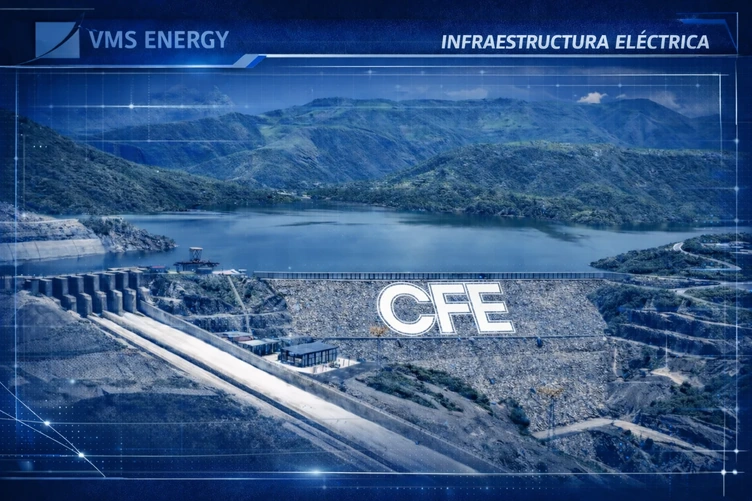
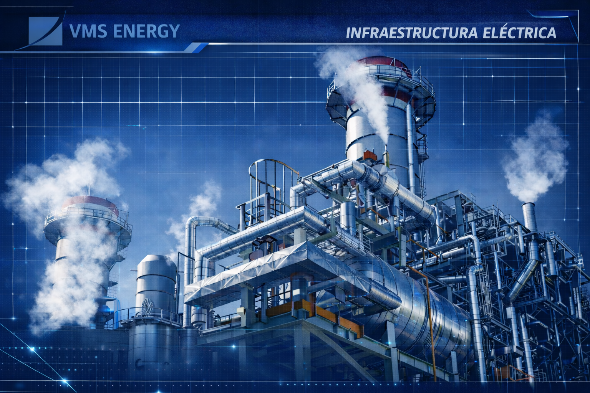

¿Cuánto tiempo de paro puede tolerar su proceso?
Si la respuesta es cero milisegundos — necesita un UPS. Si la respuesta es minutos u horas — necesita BESS. Si la respuesta es ambas — necesita los dos trabajando en conjunto.
VMS Energy diseña, suministra e instala sistemas de respaldo y almacenamiento de energía para instalaciones industriales críticas — desde la ingeniería hasta el comisionamiento y el mantenimiento.
Entre el 70% y el 90% de las instalaciones industriales en México han experimentado eventos de inestabilidad eléctrica en los últimos tres años: microcortes, huecos de tensión, variaciones de frecuencia o interrupciones prolongadas. El impacto real no se mide en kilowatts-hora — se mide en tiempo de paro no planeado, equipos dañados, lotes de producción perdidos y contratos incumplidos.
En sectores como Oil & Gas, minería, manufactura de alimentos y bebidas, o generación de energía, un corte de segundos puede representar pérdidas de cientos de miles de pesos y riesgos de seguridad inaceptables.
No todas las soluciones de respaldo son iguales, y la elección incorrecta puede significar sobredimensionamiento costoso o protección insuficiente. En VMS Energy, el proceso comienza con un diagnóstico — no con un catálogo.
Si la respuesta es cero milisegundos — necesita un UPS. Si la respuesta es minutos u horas — necesita BESS. Si la respuesta es ambas — necesita los dos trabajando en conjunto.
Si tiene picos de demanda que disparan su tarifa, cargas variables o una factura con cargos por demanda elevados — el almacenamiento estratégico (BESS) le genera retorno de inversión comprobable en 18 a 36 meses. Si sus cargas son constantes y críticas — el UPS industrial es la columna de su continuidad.
Si la respuesta es sí — el almacenamiento convierte su planta solar en una fuente gestionable, no intermitente. La combinación solar + BESS + red es la arquitectura más eficiente para industria en México hoy.
VMS Energy no es un distribuidor. Somos el integrador que selecciona, suministra, instala y pone en marcha la combinación correcta de tecnologías para cada proyecto.
Con más de 90 años de experiencia y parte del Grupo Legrand, Borri fabrica UPS industriales de doble conversión online diseñados para operar en los entornos más exigentes del planeta: plataformas offshore, plantas mineras, instalaciones de generación de energía y procesos químicos.
Lo que los distingue:| Modelo | Tipo | Rango | Aplicación típica |
|---|---|---|---|
| E3001 | UPS trifásico industrial | 5 – 600 kVA | Oil & Gas, minería, manufactura, generación |
| E2001 | UPS monofásico industrial | 5 – 200 kVA | Instrumentación crítica, salas de control, desalación |
| Ingenio SFC | Convertidor estático de frecuencia | 100 – 2,000 kVA | Equipos importados 60 Hz, puertos, aplicaciones militares |
Nota técnica: El Ingenio SFC convierte 50 Hz a 60 Hz mediante tecnología IGBT sin partes móviles, con eficiencia >95% y hasta 2,000 kVA — una solución que pocos contratistas en México conocen, y aún menos saben integrar.
Los sistemas BESS de Geolis Energía son la única solución de almacenamiento industrial diseñada y tropicalizada específicamente para las condiciones de México: voltajes 110/220/480 V a 60 Hz, protección IP66, acabados anticorrosivos C5, y operación validada en entornos de alta humedad y temperatura como el Sureste del país.
Aplicaciones:| Modelo | Potencia | Capacidad | Formato | Autonomía ref. |
|---|---|---|---|---|
| GOC125-241 | 125 kW | 241 kWh | Gabinete compacto | ~2 h @ 100 kW |
| GOC250-522 | 250 kW | 522 kWh | Multi-gabinete modular | ~2 h @ 250 kW |
| GOC1000-2000 | 1 MW | 2 MWh | Contenedor 20 ft | ~4.5 h @ 215 kW |
Certificaciones: UL9540 · UL9540A · NFPA 855 · ≥8,000 ciclos de vida útil.
Para instalaciones con generación fotovoltaica — existente o proyectada — Livoltek provee los inversores híbridos que permiten gestionar simultáneamente red, paneles solares y banco de baterías desde un solo sistema de control. En proyectos EPC solar de VMS Energy, la integración Livoltek + Geolis convierte una planta solar industrial en una microrred energéticamente autónoma y resiliente.
WEG está presente en todos los proyectos de VMS Energy como fabricante de referencia en motores industriales, variadores de frecuencia (serie CFW), transformadores de distribución e inversores solares (serie SIW). En el contexto de sistemas UPS y BESS, WEG provee la infraestructura eléctrica de soporte: adecuación de voltaje, protección de motores críticos durante eventos de respaldo e inversores para la capa de generación del sistema híbrido.
La diferencia entre un proveedor de equipos y un socio EPC está en lo que sucede antes y después de la entrega.
Medición en sitio: variaciones de voltaje, microcortes, armónicos y perfil de demanda. El diagnóstico define la solución y el retorno esperado. Sin evaluación no hay propuesta.
Dimensionamiento, selección de topología, arquitectura de redundancia, diagramas unifilares, memoria de cálculo y documentación IFC lista para aprobación y ejecución.
Gestión de compra con fabricantes, logística de importación, recepción y verificación en almacén. Para Borri y Geolis: verificación de condiciones de transporte e integridad de documentación de fábrica.
Ejecución por cuadrillas certificadas: obra civil si aplica, montaje mecánico, conexionado de fuerza y control. Sin paros de producción no planeados.
Pruebas FAT/SAT: parámetros de batería, transferencia y bypass, simulación de falla de red, tiempos de conmutación, alarmas y comunicaciones. Protocolos firmados y entregados.
Programa preventivo con frecuencia según criticidad: termografía, pruebas SOH, firmware, análisis de tendencias. Contratos anuales con tiempos de respuesta garantizados.
Casos reales de VMS Energy en sectores críticos de México.

Una instalación administrativa de soporte a infraestructura energética en Paraíso, Tabasco, con interrupciones recurrentes, requería continuidad total en sus sistemas de planeación, coordinación y monitoreo.

Base de operaciones con al menos 2 cortes diarios — desde 5 minutos hasta varias horas — en una instalación de soporte a operaciones de campo.

VMS Energy se encuentra ejecutando actualmente un proyecto con equipos UPS industriales Borri para instalaciones de la Comisión Federal de Electricidad en Colima.
En sectores industriales de alta exigencia: Oil & Gas, minería, manufactura y energía.
9001, 14001, 37001, 45001, 50001 — el contratista que opera con estándares de clase mundial.
CFE, PEMEX, Baker Hughes, Coca-Cola, CEMEX y otros operadores críticos en México.
Borri (90+ años, Grupo Legrand), Geolis (tropicalizado para México), Livoltek, WEG.
Integración con infraestructura existente: ABB, Siemens, Schneider, Rockwell.
Operaciones en Guadalajara y Ciudad del Carmen, con cobertura nacional para proyectos.
Respuestas técnicas sobre selección, dimensionamiento e integración de sistemas UPS y BESS industriales.
La norma IEC 62040-3 clasifica los UPS en tres topologías. VFI (doble conversión online) es la única que proporciona aislamiento galvánico total y tiempo de transferencia cero — es el estándar para Oil & Gas, minería y salas de control crítico. VI (interactivo) regula la tensión pero pasa por bypass durante microcortes; adecuado para cargas menos críticas. VFD (standby) solo actúa cuando la red falla; válido para respaldo básico en oficinas. Para plantas industriales con procesos continuos, VMS Energy especifica exclusivamente UPS VFI Borri E3001/E2001 porque la carga nunca ve la red de manera directa.
La autonomía depende de la potencia real de la carga (kW, no kVA — hay que aplicar cosφ), la capacidad del banco de baterías (kWh) y la eficiencia del inversor (92–96% en UPS VFI modernos).
VMS Energy dimensiona el banco según el tiempo de respaldo requerido por el plan de continuidad operativa del cliente.
VRLA/AGM (plomo-ácido selladas): bajo costo inicial, fácil disponibilidad, pero vida útil de 3–5 años en ciclos frecuentes, sensibles a temperatura y densidad energética baja (~30–50 Wh/kg). LFP (litio ferrofosfato, LiFePO₄): ≥8 000 ciclos de vida útil, densidad 90–160 Wh/kg, operación de -20 °C a +60 °C, sin efecto memoria, sin mantenimiento. Los sistemas Geolis de VMS Energy utilizan celdas LFP, certificadas bajo UL9540 / UL9540A y NFPA 855 — el estándar de seguridad para almacenamiento a escala industrial.
El peak shaving consiste en descargar el BESS durante los picos de demanda para reducir el máximo registrado en el medidor CFE. Las tarifas industriales HM/HSL/HS incluyen cargos por demanda de $300–500/kW/mes. Si la planta tiene picos de 500 kW pero su base es 350 kW, un BESS de 150 kW elimina el cargo por esos 150 kW adicionales — un ahorro de $45 000–75 000/mes. El retorno de inversión típico es de 18 a 36 meses según el perfil de carga.
BESS standalone: cuando el objetivo es peak shaving, respaldo ante interrupciones de CFE o regulación de frecuencia. BESS + solar: arquitectura óptima cuando la planta tiene o planea paneles fotovoltaicos — el BESS almacena el excedente solar del mediodía para usarlo en tarde-noche, elimina el curtailment y convierte la instalación en una microrred semi-autónoma. Con inversores Livoltek + Geolis, VMS Energy logra tasas de autoconsumo solar superiores al 85%.
Los UPS de data center están diseñados para entornos controlados (18–24 °C) con cargas electrónicas estables. Los UPS industriales Borri E3001 operan en condiciones extremas: -10 °C a +50 °C, HR hasta 95%, gases corrosivos, polvo, arranques de motores y THDi elevado por variadores. Incluyen aislamiento galvánico por transformador integrado, protección hasta IP54 y construcción certificada para zonas clasificadas. Usar un UPS de data center en planta industrial es el origen más frecuente de fallos prematuros por condensación, corrosión y sobretensiones no atenuadas.
El proceso inicia con un levantamiento eléctrico: medición de carga real (kW y cosφ), registro de curva de demanda en ventanas de 15 minutos durante al menos una semana, inventario de cargas críticas vs no críticas y revisión del historial de interrupciones. Con esa información elaboramos la ingeniería de dimensionamiento y presentamos la propuesta técnico-económica con análisis de retorno. Tiempo típico para propuesta en firme: 5 a 10 días hábiles. Contáctenos para agendar la evaluación energética sin costo.
Si no tiene la respuesta exacta, ese es precisamente el punto de partida. Nuestro equipo de ingeniería realiza evaluaciones energéticas gratuitas para instalaciones industriales: medimos, analizamos y determinamos con precisión qué tecnología resuelve su problema — y cuál es el retorno esperado.